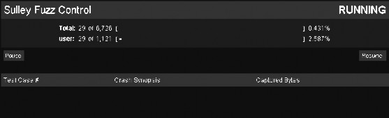
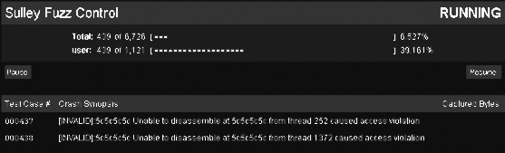

9.3 猎杀 WarFTPD
在我们已经学会了如何使用 Sulley primitives 创建 protocol description(协议说明)之后。 现在可以拿个东西试试手了。这次的目标就是 WarFTPD 1.65。问题出在 USER 和 PASS 命 令身上，向他们传递过长的数据，就会引发栈溢出。这种漏洞很典型，出现问题的地方结构 也 很 清 晰 ， 作 为 入 手 的 case 再 好 不 过 。 先 从 ftp://ftp.jgaa.com/pub/products/Windows/WarFtpDaemon/1.6_Series/ward165.exe 下载程序。在 当前目录解压子之后，直接运行 warftpd.exe 就能启动 FTP 服务了。在使用 Sulley 书写协议 说明之前，让我们先了解下 FTP 协议的工作流程。
9.3.1 FTP 101
FTP 是一个简单轻便的文件传输协议，被广泛的使用于各种环境中，从 Web 服务器到 网络打印机。FTP 服务器默认在端口 21 上监听客户端发送的命令。现在我们要冒充成 FTP 客户端，向服务器发送变形过的命令数据，尝试获得服务器的权限。如果你顺利完成 了 WarFTPD 的 fuzzer， 别忘了用它去寻找新的倒霉蛋。
一个 FTP 服务器既可以设置成不需要密码的匿名访问或者是需要密码的认证访问。因 为 WarFTPD 的漏洞出在 USER 和 PASS 命令上，所以我们就假定服务区使用认证访问。FTP 认证命令的格式如下:
USER <USERNAME> PASS <PASSWORD>
一旦客户端传入了有效的用户名和密码后，服务器就会赋予客户端，传输文件，改变目 录，查询文件等各种权限。当然 USER 和 PASS 命令只是 FTP 服务器提供的功能中的一个 子集，在认证成功后还有很多别的功能，如表 9-2。这些新的命令都要加入到我们程序的协 议框架(protocol skeleton)中。FTP 协议详细的命令，请看 rfc959。
CWD <DIRECTORY> - change working directory to DIRECTORY
DELE <FILENAME> - delete a remote file FILENAME
MDTM <FILENAME> - return last modified time for file FILENAME
MKD <DIRECTORY> - create directory DIRECTORY
Listing 9-2:我们要额外 fuzz 的 FTP 命令
命令列表虽然不够详细，但还扩大了测试的范围，现在让我们动手把它们写成 protocol description
9.3.2 创建 FTP 协议框架
学以致用，学以致用啊！
#ftp.py
from sulley import *
s_initialize("user")
s_static("USER")
s_delim(" ")
s_string("justin")
s_static("\r\n")
s_initialize("pass")
s_static("PASS")
s_delim(" ")
s_string("justin")
s_static("\r\n")
s_initialize("cwd")
s_static("CWD")
s_delim(" ")
s_string("c: ")
s_static("\r\n")
s_initialize("dele")
s_static("DELE")
s_delim(" ")
s_string("c:\\test.txt")
s_static("\r\n")
s_initialize("mdtm")
s_static("MDTM")
s_delim(" ")
s_string("C:\\boot.ini")
s_static("\r\n")
s_initialize("mkd")
s_static("MKD")
s_delim(" ")
s_string("C:\\TESTDIR")
s_static("\r\n")
protocol skeleton 完成之后，让我们开始创建 Sulley 会话，把所有的请求信息连起来， 同时启动网络嗅探和客户端调试。
9.3.3 Sulley 会话
Sulley 会话包含了请求数据整合，网络数据包的捕捉，进程调试，崩溃报告，和虚拟机 控制。先让我们定义一个会话文件，然后详细的分析每个部分。
#ftp_session.py
from sulley import *
from requests import ftp # this is our ftp.py file
def receive_ftp_banner(sock):
sock.recv(1024) sess = sessions.session(session_filename="audits/warftpd.sess
target = sessions.target("192.168.244.133", 21)
target.netmon = pedrpc.client("192.168.244.133", 26001)
target.procmon = pedrpc.client("192.168.244.133", 26002)
target.procmon_options = { "proc_name" : "war-ftpd.exe" }
# Here we tie in the receive_ftp_banner function which receives
# a socket.socket() object from Sulley as its only parameter
sess.pre_send = receive_ftp_banner sess.add_target(target)
sess.connect(s_get("user"))
sess.connect(s_get("user"), s_get("pass"))
sess.connect(s_get("pass"), s_get("cwd"))
sess.connect(s_get("pass"), s_get("dele"))
sess.connect(s_get("pass"), s_get("mdtm"))
sess.connect(s_get("pass"), s_get("mkd"))
sess.fuzz()
receive_ftp_banner()是必须的，因为每个 FTP 服务器在客户端连接上的时候，都会发送 banner(标识)。我们将它和 sess.pre_send 绑定起来，这样 Sulley 发送 fuzzing 数据前的时候 就会先接收 FTP banner。和 receive_ftp_banner 一样，pre_send 也只接收一个由 Sulley 传递的 sock 对象。第一步我们创建一个会话文件，用于记录当前 fuzzer 的状态，同时控制 fuzzing 的启动和停止。第二部定义攻击的目标，包括 IP 地址和端口号。这里设置成 192.168.244.133 端口 21（这是我们运行 WarFTPD 虚拟机的 IP）。第三步，设置网络嗅探的端口为 26001， IP 地址和 FTP 服务器的地址一样，这个端口用于接受 Sulley 发出的命令。第四步，设置调 试器监听的端口 26002，这个端口用于接收 Sulley 发出的调试命令。procmon_options 选项 告诉调试器我们关注的进程是 war-ftpd.exe。第六步，在会话中加入定义好的目标对象。第 七步，将 FTP 请求指令有序的组织好。先是认证，然后将操作指令和需要的密码成对传入。 最后启动 Sulley 开始 fuzzing。
现在我们定义好了会话，组织好了请求指令。只剩下网络和监控脚本的设置了。当这一切都完成的时候，就可以去捕捉我们的猎物了。
9.3.4 网络和进程监控
Sulley 的优点之一就是能非常好的跟踪 fuzz 期间的数据交互，以及目标系统的崩溃信 息。这样我们就能在第一时间内分析出引起目标崩溃的数据包，然后快速的开发出 exploit。
在 Sulley 的主目录下可以找到 process_monitor.py 和 network_monitor.py 两个脚本，他 们分别负责网络监控和进程监控。
python process_monitor.py
Output:
ERR> USAGE: process_monitor.py
<-c|--crash_bin FILENAME> filename to serialize crash bin class to
[-p|--proc_name NAME] process name to search for and attach to [-i|--ignore_pid PID] ignore this PID when searching for the
target process
[-l|--log_level LEVEL] log level (default 1), increase for more
verbosity
[--port PORT] TCP port to bind this agent to
如下启动进程监控。
python process_monitor.py -c C:\warftpd.crash -p war-ftpd.exe
提示:我们已经设置了默认的监听端口 26002，所以不用-p 选项。
接下来看看 network_monitor.py。在这之前需要安装以下的库： WinPcap 4.0, pcapy, mpacket。
python network_monitor.py Output:
ERR> USAGE: network_monitor.py
<-d|--device DEVICE #> device to sniff on (see list below)
[-f|--filter PCAP FILTER] BPF filter string
[-P|--log_path PATH] log directory to store pcaps to
[-l|--log_level LEVEL] log level (default 1), increase for more verbosity
[--port PORT] TCP port to bind this agent to
Network Device List:
[0] \Device\NPF_GenericDialupAdapter
[1] {83071A13-14A7-468C-B27E-24D47CB8E9A4} 192.168.244.133
在这里我们需要使用第一个网络接口。如下启动网络监控。 python network_monitor.py -d 1 -f "src or dst port 21" -P C:\pcaps\ 提示：在启动之前必须先建立 C:\pcaps 目录。
一切就绪，开始猎食。
9.3.5 fuzzing 和 Web 界面
现在我们启动 Sulley，并使用内置的 Web 界面观察整个 fuzz 过程。
python ftp_session.py
输出如下：
[07:42.47] current fuzz path: -> user
[07:42.47] fuzzed 0 of 6726 total cases
[07:42.47] fuzzing 1 of 1121
[07:42.47] xmitting: [1.1]
[07:42.49] fuzzing 2 of 1121
[07:42.49] xmitting: [1.2]
[07:42.50] fuzzing 3 of 1121
[07:42.50] xmitting: [1.3]
如果输出是这样的，说明一切正常。Sulley 正在繁忙的工作着。现在让我们看看 web 界面，它会提供更多信息。
用浏览器打开 http://127.0.0.1:26000 ，将看到类似图 9-1 的结果。

Figure 9-1: Sulley 的 web 界面
不断的刷新浏览器就能看到当前 fuzzing 的进程，以及正在使用的 primitive。如图 9-1 你会看到正在 fuzzing 的 primitive 是 user，这个命令存在漏洞，在不久之后就会看到如图 9-2 的崩溃报告。

Figure 9-2: Sulley web 界面显示的崩溃信息
很好，应该说非常好！我们已经成功的 Crash 了 WarFTPD，Sulley 也捕捉到了所有相关 的信息。我们看到两个测试用例的错误信息都是不能反汇编 0x5c5c5c5c 这个地址。0x5c 就 是 ASCII 字符\，这是由于传入的\字符过多，覆盖了别的内存区域，紧接这影响到 EIP。当 调试器尝试反汇编 EIP 指向的位置的时候，就会失败，因为 0x5c5c5c5c 不是一个有效的地 址。这意味我们已经能够控制 EIP 了，那接下来就是开发 exploit 了！激动吗？呵呵，可惜 这是我们之前就知道的漏洞。不过有了这次成功的测试，我们对 Sulley 的工作方式已经很 熟悉了，对于别的 fuzzing 对象也只要依葫芦画瓢就行了。Good Luck!
现在点击 test case 的数字，就会看到详细的崩溃信息。如表 9-3 PyDbg 崩溃信息格式在 60 页的"访问违例处理程序"中有详细的讲解。忘记的返回去看 看。
[INVALID]:5c5c5c5c Unable to disassemble at 5c5c5c5c from thread 252 caused access violation
when attempting to read from 0x5c5c5c5c CONTEXT DUMP
EIP: 5c5c5c5c Unable to disassemble at 5c5c5c5c
EAX: 00000001 ( 1) -> N/A
EBX: 5f4a9358 (1598722904) -> N/A
ECX: 00000001 ( 1) -> N/A
EDX: 00000000 ( 0) -> N/A
EDI: 00000111 ( 273) -> N/A
ESI: 008a64f0 ( 9069808) -> PC (heap)
EBP: 00a6fb9c ( 10943388) -> BXJ_\'CD@U=@_@N=@_@NsA_@N0GrA_@N*A_0_C@ Ct^J_@_0_C@N (stack)
ESP: 00a6fb44 ( 10943300) -> ,,,,,,,,,,,,,,,,,, cntr User from
192.168.244.128 logged out (stack)
+00: 5c5c5c5c ( 741092396) -> N/A
+04: 5c5c5c5c ( 741092396) -> N/A
+08: 5c5c5c5c ( 741092396) -> N/A
+0c: 5c5c5c5c ( 741092396) -> N/A
+10: 20205c5c ( 538979372) -> N/A
+14: 72746e63 (1920233059) -> N/A
disasm around:
0x5c5c5c5c Unable to disassemble
stack unwind:
war-ftpd.exe:0042e6fa
MFC42.DLL:5f403d0e
MFC42.DLL:5f417247
MFC42.DLL:5f412adb
MFC42.DLL:5f401bfd
MFC42.DLL:5f401b1c
MFC42.DLL:5f401a96
MFC42.DLL:5f401a20
MFC42.DLL:5f4019ca
USER32.dll:77d48709
USER32.dll:77d487eb
USER32.dll:77d489a5
USER32.dll:77d4bccc
MFC42.DLL:5f40116f
SEH unwind:
00a6fcf4 -> war-ftpd.exe:0042e38c mov eax,0x43e548
00a6fd84 -> MFC42.DLL:5f41ccfa mov eax,0x5f4be868
00a6fdcc -> MFC42.DLL:5f41cc85 mov eax,0x5f4be6c0
00a6fe5c -> MFC42.DLL:5f41cc4d mov eax,0x5f4be3d8
00a6febc -> USER32.dll:77d70494 push ebp
00a6ff74 -> USER32.dll:77d70494 push ebp
00a6ffa4 -> MFC42.DLL:5f424364 mov eax,0x5f4c23b0
00a6ffdc -> MSVCRT.dll:77c35c94 push ebp
ffffffff -> kernel32.dll:7c8399f3 push ebp
Listing 9-3:#437 测试用例 产生的崩溃信息
Sulley 的主要应用已经讲解完成了。当然这些只是其中的一部分，还有很多很多的东西， 需要各位同学，自己去研究，比如崩溃数据的过滤，primitives 的图形化输出，等等。从今 以后，Sulley 不再是一头可怕的怪物，而是我们 bug-hunging 时的利器。在我们成功的完成 了远程服务的 fuzz 以后，接下来然我们 fuzz 本地的 Windows 下的驱动程序，这次我们用自 己的工具。